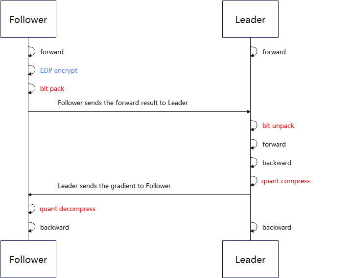
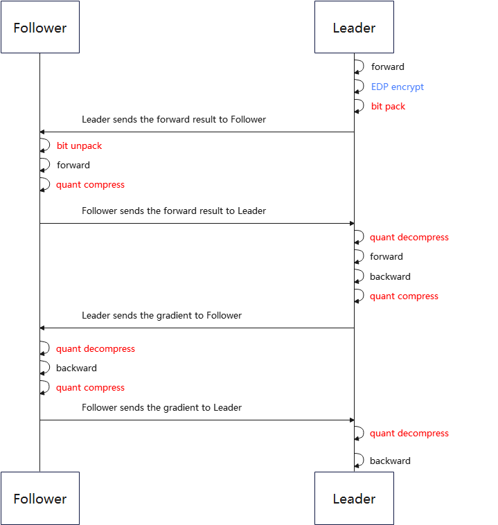

Vertical Federated Learning Communication Compression¶

Vertical federated learning traffic affects user experience (user traffic, communication latency, federated learning training efficiency) and is limited by performance constraints (memory, bandwidth, CPU usage). Small amount of communication helps a lot to improve user experience and reduce performance bottlenecks, so it needs to be compressed. MindSpore Federated implements bi-directional communication compression between Leader and Follower in a vertical federated application scenario.
Overall Process¶

Figure 1 Framework diagram of general vertical federated learning communication compression process
First perform the Embedding DP (EDP) encryption operation on Follower. Then enter the bit packing process. The bit packing process automatically determines whether the input data can be packed, and only when the input data can be strongly converted to the specified bit storage format with no loss of precision, the bit packing operation is performed. Follower sends the packaged data to Leader, Leader determines whether the data needs to be unpacked based on the reported data information. Before the Leader passes the data to the Follower, it is quantized and compressed. Follower receives the data and decompresses the quantized data.

Figure 2 Framework diagram of Pangu vertical federated learning communication compression process
The overall process is the same as the general vertical federated learning communication compression process. Compared to normal vertical federated, each iteration will have one more round of communication in Pangu vertical federated learning, so it needs to perform one more quantization compression and decompression process.
Compression Method¶
Bit Packing Compression Method¶
Bit-packing compression is a method of converting a sequence of data structures into a compact binary representation. Bit packing itself is a lossless compression method, but usually the data input to bit packing is compressed with loss compression.
Taking 3-bit packing as an example:
Quantization bitness bit_num= 3
The data stored in the format of float32 before compression is:
data = [3, -4, 3, -2, 3, -2, -4, 0, 1, 3]
First determine if compression is possible using bit-packing compression:
data_int = int(data)
If the elements in data - data_int are not 0, exit the bit packing process.
Convert the source data to binary format based on bit_num:
data_bin = [011, 100, 011, 110, 011, 110, 100, 000, 001, 011]
Note: Before conversion, you need to determine whether the current data is within the range that bit_num can accommodate. If it exceeds the range exit the bit packing process.
Since native C++ does not have a dedicated binary storage format, multiple binary data need to be stitched together and combined into int8 format data storage. If the number of bits is not enough, zero is added to the last data. Combined data is as follows:
data_int8 = [01110001, 11100111, 10100000, 00101100]
The binary data is then converted to an integer between -128 and 127, and the data type is strongly converted to int8.
data_packed = [113, -25, -96, 44]
Finally, data_packed and bit_num are passed to the receiver.
When unpacking, the receiver simply reverses the above process.
Quantization Compression Method¶
The quantization compression method is that communication data fixpoint of floating is approximated to a finite number of discrete values. The currently supported quantization compression method is minimum-maximum compression (min_max).
Taking the 8-bit quantization as an example:
Quantization bitness bit_num= 8
The float data before compression is:
data = [0.03356021, -0.01842778, -0.009684053, 0.025363436, -0.027571501, 0.0077043395, 0.016391572, -0.03598478, -0.0009508357]
Compute the minimum and maximum values:
min_val = -0.03598478
max_val = 0.03356021
Compute the scaling coefficient:
scale = (max_val - min_val) / (2 ^ bit_num- 1) = 0.000272725450980392
Convert the pre-compressed data to an integer between -128 and 127 with the formula quant_data = round((data - min_val) / scale) - 2 ^ (bit_num - 1). And to directly convert the data type to int8:
quant_data = [127, -64, -32, 97, -97, 32, 64, -128, 0]
After the quantitative encoding, the parameters to be uploaded by the sender are quant_data, bit_num, and the maximum and minimum values min_val and max_val.
After receiving quant_data, min_val and max_val, the receiver uses the inverse quantization formula (quant_data + 2 ^ (bit_num - 1)) * (max_val - min_val) / (2 ^ bit_num - 1) + min_val to restore the weights.
Fast Experience¶
To use bit packing or quantized compression methods, one first needs to successfully complete the training aggregation process for any of the vertical federated scenarios, such as Vertical Federated Learning Model Training - Wide&Deep Recommended Applications. The preparation work including datasets and network models and the process of simulating the start of federated learning are described in detail in this document.
For MindSpore and MindSpore Federated installation and data preprocessing, refer to Vertical Federated Learning Model Training - Wide&Deep Recommended Applications.
Set the configuration related to compression setting in related yaml.
The configuration of leader_top.yaml is as follows:
role: leader model: # define the net of vFL party train_net: name: leader_loss_net inputs: - name: leader_wide_embedding source: local - name: leader_deep_embedding source: local - name: follower_wide_embedding source: remote compress_type: min_max bit_num: 6 - name: follower_deep_embedding source: remote compress_type: min_max bit_num: 6 ...
The configuration of follower_bottom.yaml is as follows:
role: follower model: # define the net of vFL party train_net: name: follower_loss_net inputs: - name: id_hldr0 source: local - name: wt_hldr0 source: local outputs: - name: follower_wide_embedding destination: remote compress_type: min_max bit_num: 6 - name: follower_deep_embedding destination: remote compress_type: min_max bit_num: 6 - name: follower_l2_regu destination: local ...
Users can make super-reference modifications according to the actual situation.
compress_type: Compression type, string type, including: “min_max”, “bit_pack”.
bit_num: The number of bits, int type, the definition domain is within [1, 8].
Run the sample program to start the script.
# Start leader process: bash run_vfl_train_leader.sh 127.0.0.1:1984 127.0.0.1:1230 ./mindrecord/ False # Start follower process: bash run_vfl_train_follower.sh 127.0.0.1:1230 127.0.0.1:1984 ./mindrecord/ False
Check the training log
vfl_train_leader.log. loss converges normally.epoch 0 step 0 loss: 0.693124 epoch 0 step 100 loss: 0.512151 epoch 0 step 200 loss: 0.493524 epoch 0 step 300 loss: 0.473054 epoch 0 step 400 loss: 0.466222 epoch 0 step 500 loss: 0.464252 epoch 0 step 600 loss: 0.469296 epoch 0 step 700 loss: 0.451647 epoch 0 step 800 loss: 0.457797 epoch 0 step 900 loss: 0.457930 epoch 0 step 1000 loss: 0.461664 epoch 0 step 1100 loss: 0.460415 epoch 0 step 1200 loss: 0.466883 epoch 0 step 1300 loss: 0.455919 epoch 0 step 1400 loss: 0.466984 epoch 0 step 1500 loss: 0.454486 epoch 0 step 1600 loss: 0.458730 epoch 0 step 1700 loss: 0.451275 epoch 0 step 1800 loss: 0.445938 epoch 0 step 1900 loss: 0.458323 epoch 0 step 2000 loss: 0.446709 ...
Close the training process
pid=`ps -ef|grep run_vfl_train_ |grep -v "grep" | grep -v "finish" |awk '{print $2}'` && for id in $pid; do kill -9 $id && echo "killed $id"; done
Deep Experience¶
Obtaining the Compression Configuration¶
The user can use the encapsulated interface to get the configuration related to communication compression. The Yaml Configuration file for model training of vertical federated learning gives the configuration description of the parameters related to the startup. The Model Training Interface provides the interface to get the compression configuration. The example method is as follows:
# parse yaml files
leader_top_yaml_data = FLYamlData(config.leader_top_yaml_path)
# Leader Top Net
leader_top_base_net = LeaderTopNet()
leader_top_train_net = LeaderTopLossNet(leader_top_base_net)
leader_top_fl_model = FLModel(
yaml_data=leader_top_yaml_data,
network=leader_top_train_net
)
# get compress config
compress_configs = leader_top_fl_model.get_compress_configs()
Setting Compression Configuration¶
Users can use the already encapsulated Vertical Federated Learning Communicator interface to set the configuration related to communication compression to the communicator device by the following method:
# build vertical communicator
http_server_config = ServerConfig(server_name='leader', server_address=config.http_server_address)
remote_server_config = ServerConfig(server_name='follower', server_address=config.remote_server_address)
vertical_communicator = VerticalFederatedCommunicator(
http_server_config=http_server_config,
remote_server_config=remote_server_config,
compress_configs=compress_configs
)
vertical_communicator.launch()
After setting the communication compression configuration, the vertical federated framework will automatically compress the communication content in the backend.